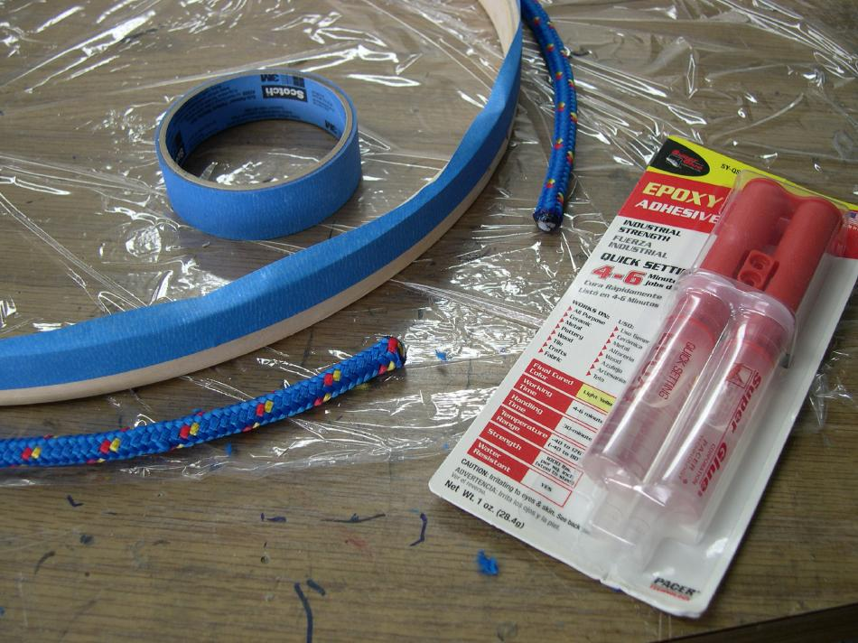

| Wood / Freestanding Coaming (5 of 8) | Menu Previous Page Next Page |
|
 Glue the rope lip to the coaming using a light coat of 5-minute epoxy. This epoxy is not the structural base for the lip, as several coats of Epoxy resin will be applied later to greatly strengthen the bond. The 5-minute epoxy allows the lip to be be secured without waiting for slower glue to dry. As an alternative, small wood secrews can be used every few inches to further secure the rope to the coaming hoops. Masking tape can be applied before gluing to keep things from getting messy. |
|